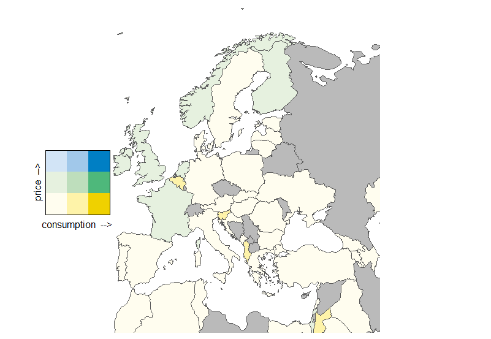
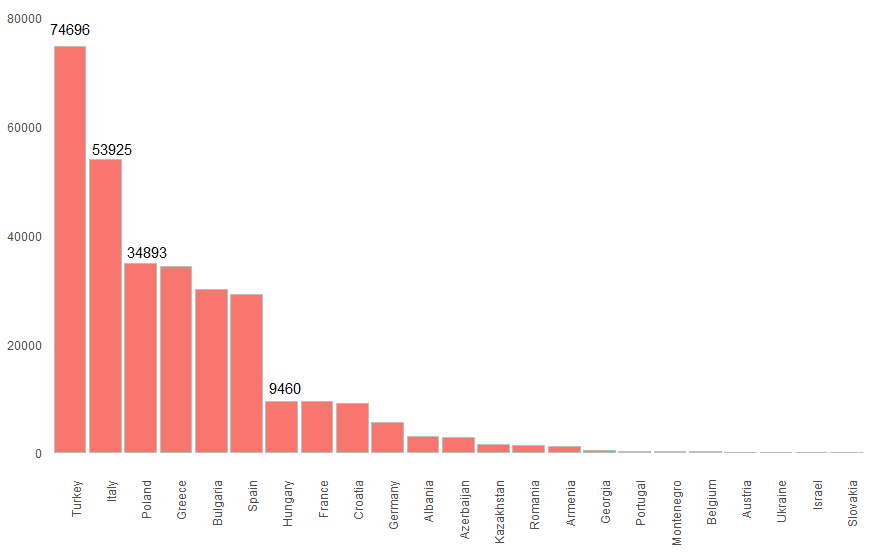
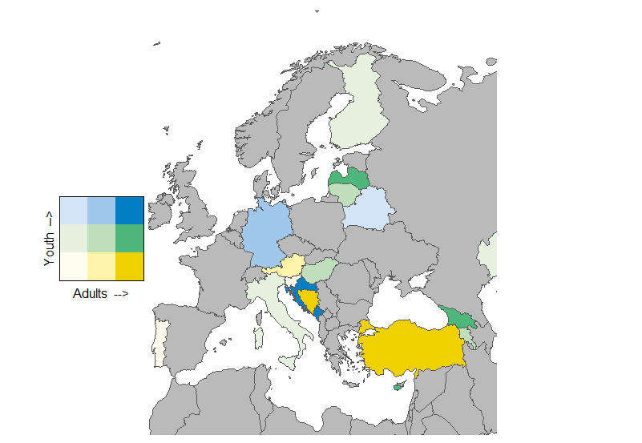

The data on cigarettes price was taken from a crowd-sourced price database Numbeo.com Unfortunately, there was no data available for the countries with not enough respondents. The figures were last updated on March, 1st. The data on cigarettes consumption per capita was taken from Tobacco Atlas The figures are fair for 2016. I compared the two indicators and where both of them were available presented the ratio in the bivariate choropleth map of Europe below.
As evident from the map, there are three states where people smoke more than in other countries with prices being low. They are Belgium, Slovenia, and Albania. Surprisingly enough, the finding does not correspond with tobacco production data. According to the UN, Europe’s biggest tobacco producers in 2014 were Turkey (74696 metric tonnes), Italy (53925 metric tonnes) and Poland (34893 metric tonnes).
According to the map above, all these three countries have both low consumption and low cigarettes prices. On the other hand, according to the same source about production, all three of them have higher amounts of hectares for tobacco growing than Europe’s average.
In other European states, the prices do not seem to impact consumption. In all other countries, except for Finland, Norway, the UK, and the Netherlands, the prices and consumption rates are low.
Maybe the new rules and prices increase has not played their roles yet? What about the dynamics? Let us see if there is a pattern in adults smoking compared to youth in Europe? I took the data on tobacco consumption provided by UN in different age group. Where data were available for both, I presented its ratio in a map below.
The least amount of young smokers compared to adults is in Turkey and Bosnia and Herzegovina. Fewer youngsters, but still the highest amount of adults smoke in Georgia and in Latvia. The highest levels of consumption within both age groups are seen in Slovenia and Montenegro. It is worth noticing that in most Balkan countries the price for cigarettes is low and at the same time smoking in public is not as restricted as it is in other European states.
In Italy and Finland, more youngsters smoke than adults. In Hungary and Lithuania, both groups smoke on the medium level.
In Belarus, the ratio is the most disturbing: the dynamics show the least amount of older smokers compared to the youth. In Germany, the level of young smokers is higher than average in Europe while the level of adult smokers is medium.